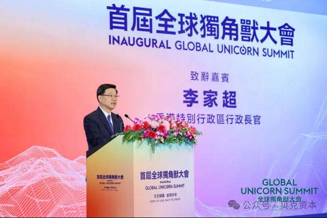
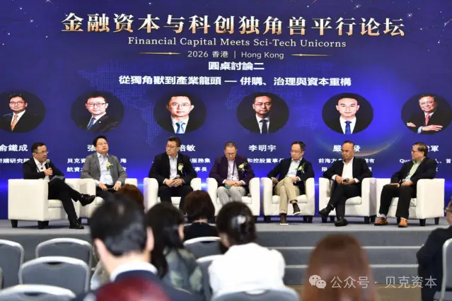
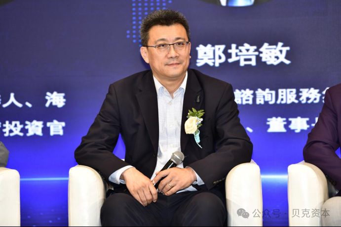

August 24, 2026. Hong Kong Convention and Exhibition Centre. I attended the inaugural Global Unicorn Summit — Financial Capital and Tech Unicorn Forum, hosted by Hong Kong Ta Kung Wen Wei Media Group — in my capacity as Secretary-General & COO of WTCA Singapore. The forum brought together global investors, entrepreneurs, academics, experts and representatives of leading industry players. Discussions centered on how capital drives tech innovation, AI industry transformation, unicorn commercialization and global expansion. Our Chairman, Mr. Blake Zhang — who is also Chairman of Blake Capital — attended as a forum guest. In the roundtable themed "From Unicorn to Industry Leader — M&A, Governance and Capital Restructuring," he shared five key points on cross-border M&A, drawing on his experience managing over RMB 100 billion in asset M&A through to exit. I sat in the audience, taking notes, wanting to capture the judgments that truly carry weight in cross-border M&A.

At the opening ceremony, Hong Kong Chief Executive John Lee said the world is undergoing a revolution in technology and industry. Breakthroughs in life and health technology are pushing back limits, artificial intelligence and robotics are reshaping production, and new energy innovation is rewriting the rules. Under "One Country, Two Systems," he said, Hong Kong serves as a "super connector" and "super value-adder" between China and the world. It is not only a springboard for mainland startups and unicorn companies entering international markets, but also the preferred hub for top overseas tech companies exploring the mainland market.
At the Financial Capital and Tech Unicorn Forum, Jia Hongbo, Chairman of the Global Value Investment Association, said tech unicorns are a highly vibrant market force in the new economic era. They carry missions such as frontier technological breakthroughs and business model innovation, while financial capital is the key driving force behind their continued growth.

First: What Breakthrough Is the Deal Meant to Achieve?
Is the purpose market breakthrough, technological breakthrough, or organizational and talent breakthrough? This must be clarified before anything else.
Second: How Can the Interests of Both Parties Be Aligned?
How the two sides bind their interests after the transaction is key to whether the M&A succeeds. Zhang once used a share swap between a Hong Kong-listed company and a Singapore-listed company to create a mutually embedded ownership structure that aligned both parties' interests.
Third: How Should Synergies Be Measured?
Synergies come down to cost reduction and revenue growth. Measuring cost reduction is often more realistic and reliable than measuring revenue growth, which acquiring parties tend to overestimate.

Fourth: How Should an Exit Be Carried Out After the Deal?
Zhang shared his insights based on a case in which he served as Chief Investment Officer at HNA and managed more than RMB 130 billion in M&A, successfully completing a safe exit within a short period.
Fifth: What Is the Funding Plan?
The funds used for M&A must match the planned cycle of the deal. The real effects of M&A often do not appear in the short term and usually take three to five years to materialize. Financing long-term investments with short-term debt is therefore a major pitfall to avoid.
"The funds used for M&A must match the planned cycle of the deal… financing long-term investments with short-term debt is a major pitfall to avoid."
— Blake Zhang, Chairman of WTC Singapore & Blake CapitalFrom Anti-Dumping to AI-Driven: A Generational Leap in China's Going Global
Asked about the global expansion of unicorn companies, Chairman Zhang said that in the 1980s and 1990s, Chinese exporters were often hit with anti-dumping lawsuits because the cost structure of most low- and mid-end export goods was easy to calculate. Today, more and more Chinese exports are moving toward mid- and high-end manufacturing and AI-enabled business models driven by technological content and competitive advantages, effectively avoiding the anti-dumping lawsuits that were once common. He also called on financial capital to adopt a "co-investment with joint due diligence" model to back promising Chinese tech companies going global, noting that cross-border M&A remains an important way to accelerate overseas expansion.
Consensus: Globalization Is Inevitable — How You Do It Is the Real Test
The forum also featured guests from government, investment institutions and publicly listed companies discussing the second growth curve of unicorn globalization and business going overseas. Investment experts reached a consensus, including Liang Hanjing, Global Head of Financial Services, Tech Innovation and Sustainability at Invest Hong Kong; Wu Shichun, Founding Partner of Plum Ventures; Yu Tiecheng, President of Guanghui M&A Research Institute; Cheng Hanwen, Chairman of the China Enterprises Going Global Alliance; Wang Xiaoming, Chairman of Guangzhou Xinlaifu New Materials; Li Mingyu, Chairman of Qianhe Holdings; and Yan Qifa, Managing Director of Qianhai Ark Asset Management. They agreed that globalization is an inevitable long-term strategy for tech companies, and that making good use of cross-border M&A to integrate global resources, using Hong Kong as a springboard for going overseas, and achieving truly localized operations under global rules are all challenges that must be faced.
My Takeaway: M&A Is Not a Transaction — It's a Systemic Capability
Sitting in the audience as Secretary-General & COO, my strongest impression after hearing these five points is this: M&A is never just a transaction — it is the building of a systemic capability. Each of the five points that Chairman Zhang distilled from his real-world experience managing hundred-billion-yuan M&A at HNA through to safe exit points to the same core: being clear about "why we're doing it" matters far more than "how we do it." For us at WTC Singapore, leveraging the WTCA network across nearly 100 countries and 320 cities, what we are doing is precisely providing that trusted node of "how to land" for Chinese tech companies' global expansion. Hong Kong as super connector, Singapore as Southeast Asia hub — the synergy between these two is the direction we will continue to deepen.
"M&A is never just a transaction — it is the building of a systemic capability. Being clear about 'why we're doing it' matters far more than 'how we do it.'"
— Bruce Dong, Secretary-General & COO, WTCA SingaporeAs the newly elected Chairman of WTC Singapore, Blake Zhang, Chairman of Blake Capital, called on tech companies to plan early and with a long-term horizon. Relying on the global World Trade Centers Association (WTCA) network spanning nearly 100 countries and 320 cities, they can effectively link global capital, continuous innovation and global markets, enabling sustained financial support and accelerating the globalization of Chinese unicorn companies.
About the World Trade Centers Association
The World Trade Centers Association (WTCA), founded in 1970, is a non-profit, non-political organization dedicated to the establishment and effective operation of World Trade Centers around the world, promoting regional economic development and facilitating international trade and investment. Headquartered in New York, its global network includes over 300 World Trade Centers in nearly 100 countries and regions, serving thousands of business members and clients by helping them expand sourcing, increase customers and enhance investment and financing opportunities.
About WTC Singapore
WTC Singapore is the official authorized member of the World Trade Centers Association (WTCA) in Singapore. Through three business pillars — WTC ONE Club, GlobalX, and WTC Fund — it is dedicated to connecting global capital, innovation resources and market opportunities, providing enterprises with cross-border resource matching and globalization landing support.